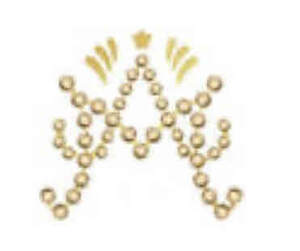

Trade Mark Journal No.2025/040 3 October 2025
UK00004267687 22 September 2025 (25)

- Class 25
- Clothes for women, men, kids. Dresses, wedding, caps, hats. Silk hijabs, scarfs, abayas, burkas. ; Clothes; Hijabs; Veils [clothing]; Headbands [clothing]; Headbands for clothing; Kerchiefs [clothing]; Clothing; Shorts [clothing]; Jackets [clothing]; Swaddling clothes; Headscarfs; Gloves [clothing]; Gloves as clothing; Capes (clothing); Baby clothes; Shawls and headscarves; Jackets (Stuff -) [clothing]; Stuff jackets [clothing]; Clothing for babies; Silk clothing; Ready-to-wear clothing; Dress shirts; Playsuits [clothing]; Denims [clothing]; Belts [clothing]; Belts for clothing; Woolen clothing; Clothes for sport; Headscarves; Beach clothes; Corsets [clothing, foundation garments]; Linen clothing; Furs [clothing]; Tops [clothing]; Hats (Paper -) [clothing]; Paper hats [clothing]; Quilted jackets [clothing]; Clothing for leisure wear; Embroidered clothing; Fabric belts [clothing]; Burkas; Knitted clothing; Knitwear [clothing]; Jackets being sports clothing; Paper hats for use as clothing items; Oilskins [clothing]; Bottoms [clothing]; Cashmere clothing; Golf clothing, other than gloves; Mufflers [clothing]; Dress shoes; Parts of clothing, footwear and headgear; Clothing for children; Trunks being clothing; Ready-made clothing; Party hats [clothing]; Underwear for women; Drawers [clothing]; Leather clothing; Clothing of leather; Leather (Clothing of -); Beach clothing; Dress suits; Fancy dress costumes; Dresses; Pinafore dresses; Dresses for evening wear; Maternity dresses; Men's dress socks; Shields (Dress -); Leather dresses; Collars for dresses; Bridesmaid dresses; Wedding dresses; Dressing gowns; Jumper dresses; Casual clothing; Shoes for casual wear; Skirt suits; Bra straps [parts of clothing]; Tennis dresses; Slips [clothing]; Nurse dresses; Evening dresses; Shift dresses; Gowns; Clothing for men, women and children; Footwear for men and women; Footwear for men; Socks for men; Coats for men; Underclothing for women; Bathing suits for men; Footwear for women; Coats for women; Ladies wear; Outerclothing for men; Girls' clothing; Swim wear for gentlemen and ladies; Women's clothing; Suspender belts for men; Trousers for children; Sleeping garments; Pockets for clothing; Linen (Body -) [garments]; Body linen [garments]; Smart clothing; Swim wear for children; One-piece clothing for infants and toddlers; Socks for infants and toddlers; Infant clothing; Snap crotch shirts for infants and toddlers; Overalls for infants and toddlers; Underpants for babies; Baby shoes; Shoes for infants; Baby doll pyjamas; Hats; Fashion hats; Fur hats; Clothing for horse-riding [other than riding hats]; Mitres [hats]; Beach hats; Muffs [clothing]; Bucket hats; Paper hats for wear by nurses; Sun hats; Rain hats; Cloche hats; Fake fur hats; Baseball hats; Paper hats for wear by chefs; Fingerless gloves as clothing; Bathing caps; Caps [headwear]; Caps being headwear; Baseball caps and hats; Swimming caps [bathing caps]; Sports caps and hats; Thermal clothing; Knitted caps; Latex clothing; Shoes; High-heeled shoes; Shoes for leisurewear; Leather shoes; Sandals and beach shoes; Sneakers [footwear]; Jogging shoes; Tongues for shoes and boots; Tennis shoes; Beach shoes; Snowboard shoes; Pullstraps for shoes and boots; Dance shoes; Rubber shoes; Soccer shoes; Running shoes; Mountaineering shoes; Shoes soles for repair; Flat shoes; Rain shoes; Golf shoes; Knitted baby shoes; Sports shoes; Skiing shoes; Sport shoes; Roller shoes; Football shoes; Socks; Socks and stockings; Trouser socks; Knitted underwear; Sweat-absorbent socks; Inner socks for footwear; Underwear; Toe socks; Thermal socks; Men's socks; Non-slip socks; Sports socks; Underclothes; Gussets for tights [parts of clothing]; Sweat-absorbent underclothing [underwear]; Pop socks; Jockstraps [underwear]; Trunks [underwear]; Disposable underwear; Underwear (Anti-sweat -); Sweat-absorbent underwear; Thermal underwear; Underpants; Men's underwear; Women's underwear; Lingerie; Ladies' clothing; Motorists' clothing; Babies' clothing; Children's clothing; Boys' clothing; Motorcyclists' clothing; Infants' clothing; Slipovers [clothing]; Ladies' underwear; Motorcyclists' clothing of leather; Clothing made of fur; Fur jackets; Fur coats; Fur coats and jackets; Plush clothing; Stoles (Fur -); Synthetic fur stoles; Clothing of imitations of leather; Leather (Clothing of imitations of -); Denim jackets; Men's and women's jackets, coats, trousers, vests; Stuff jackets; Sleeved jackets; Sleeveless jackets; Bed jackets; Leather jackets; Sheepskin jackets; Casual jackets; Snowboard jackets; Sweat jackets; Rainproof clothing; Blouson jackets; Suede jackets; Ski jackets; Dinner jackets; Warm-up jackets; Rain jackets; Padded jackets; Winter coats; Winter gloves; Clothing for skiing; Sailing wet weather clothing; Triathlon clothing; Knee warmers [clothing]; Clothing for sports; Sports clothing; Wedding gowns; Bridal gowns; Cocktail dresses; Paper clothing; Scarfs; Snoods [scarves]; Cashmere scarves; Sweaters; Scarves.
MARGARET WISNIEWSKA LIMITED
MARGARET WISNIEWSKA LIMITED